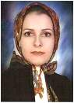

|
|
|
نام: نسرین نصیریانی
سمت: مدیرعامل
تحصیلات: کارشناسارشد معماری و شهرسازی، دانشگاه یزد
|
 |
خلاصه سوابق حرفهای
نسرین نصیریانی در سال 1354 در یزد متولد شد. مقطع دبیرستان را در رشته ریاضی-فیزیک در همین شهرستان به پایان رساند و با وجود کسب رتبه 28درکنکورسراسری سال 1373، دانشکده معماری وشهرسازی یزد را برای ادامه تحصیل برگزید. در سال 1381 با ارائه پایان نامه با موضوع طراحی مجتمع فنی – حرفه ای پسران یزد از این دانشگاه فارغ التحصیل شد. در سال 1383 به عضویت سازمان نظام مهندسی ساختمان استان یزد در آمد. و با گذراندن دوره های مختلف آموزشی سازمان نظام مهندسی موفق به ارتقاء پایه گردید. تدریس و راهنمایی پایان نامه های تحصیلی فعالیت های وی در بخش آموزشی را تشکیل می دهد. همچنین طراحی و نظارت منازل مسکونی در یزد نیز از عمده فعالیت های او در بخش فنی و اجرایی محسوب می شود.
|
- طراح معمار
- سابقه بیش از 10 سال
- مدرس دروس معماری
- توجه به معماری ایرانی
|
مهارت های تخصصی و کلیدی
- طراحی مجتمع های آموزشی و دانشگاهی
- طراحی معماری مجموعه های مسکونی
- تدریس و راهنمای پایاننامههای دانشگاهی
|

دانشکده معماری و
شهرسازی دانشگاه یزد
|
منتخب پروژه ها
- طراحی کتابخانه آموزشکده فنی – حرفه ای حضرت رقیه یزد ، سال 1385
- برداشت قلعه تاریخی ، روستای عسکریه و طرح بازسازی آن ، سال 1386
- طراحی مجتمع آپارتمانی 10 واحدی ، ( رهبر )
- همکاری در طراحی مجتمع مسکونی فدک ، سال 1382 ( مشاور یزد بنا )
- همکاری درطراحی شهرک کامرانیه یزد
- طراحی و نظارت منازل مسکونی در یزد
|

|
سوابق فنی
- مدیر عامل شرکت مهندسین مشاور محمود آباد
- عضو سازمان نظام مهندسی ساختمان استان یزد
- عضوانجمن نخبگان یزد
- همکاری با شرکت مهندسین مشاور محمود آباد و کاوش انرژی های نو ، معماری از سال 1383
|

|
|